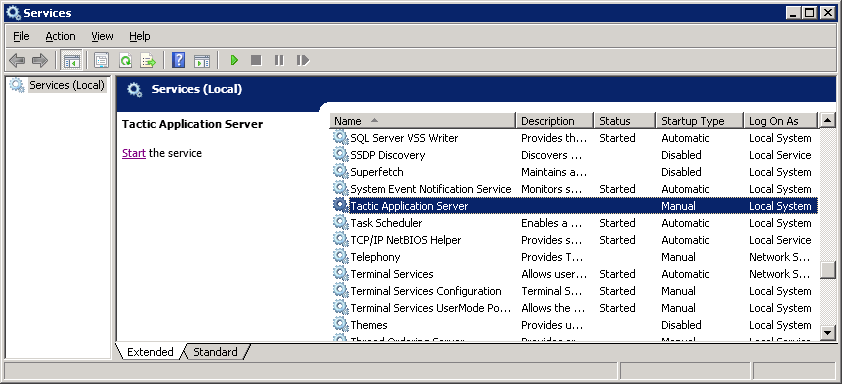

TACTIC Install - Windows Server 2008
To completely install TACTIC Enterprise, there are three main components that have to be set up in the following order:
-
A Database
-
The TACTIC Installer
-
A Web Server
TACTIC stores all metadata in a database called PostgreSQL. This is an industrial strength, hugely scalable database that has proven itself in thousands of industries around the world. Go to the PostgreSQL website for more information.
From the PostgreSQL site (http://www.postgresql.org), download the .msi file for the latest binary distribution. We have encountered no problems using any of the versions above 8.4. You can find the binary distribution at this site. Follow the installation wizard for PostgreSQL. It is safe to choose all of the default settings if you do not have much experience with the PostgreSQL. It is best not to set a password during installation, although the Windows installer may force you to set one up.
Unzip Tactic Enterprise in a temporary location like C:/temp
It is mandatory you edit the "pg_hba.conf" file after installation
It is located in C:/Program Files/PostgreSQL/<version>/data This file determines all of the user permissions for PostgreSQL. You can open this file with any text editor like notepad. To begin with, turn on all of the permissions contained in this file. This is a temporary measure that will greatly simplify the installation process. You may lock down these permissions at a later date. Please consult the PostgreSQL documentation on how to do this. TACTIC ships with a sample "pg_hba.conf" file (located in <TACTIC_unzipped_package>/src/install/postgresql/pg_hba.conf). This file has an open security setting for ease of installation. It’s best to back up your current pg_hba.conf file before copying over with the file provided by TACTIC. Note: in Windows, you would need to comment out the line
local all all trust
You add a comment by putting a # at the beginning of the line like this:
#local all all trust
Add the PostgreSQL bin directory to the environment path in Advanced System Settings: C:\Program Files\PostgreSQL\<version>\bin\
To do this, go to Start -→ Control Panel. If it’s organized in category mode, go to system and security -→ system. If its not categorized, you should see system directly. In system, find advanced system and settings -→ go to the advanced tab -→ Environment variables. Now in the system variables box, Navigate to the variable "Path". Add the bin directory to the end of the value.
Restart the PostgreSQL Service:
You can go to the control panel again to do this. If it’s organized in category mode, go to system and security -→ administrative tools. If it’s not categorized, you will see administrative tools directly. Inside, you can find services. Find the postgresql service and restart it. Note: If you have command prompt open, you need to reopen it for the environment variable to take effect.
Verification
Verify that psql works in the command prompt:
> psql -U postgres template1It should give you a prompt:
template1=#If you see this prompt without the need to enter a password, you have successfully installed the PostgreSQL database. Type \q to exit.
Install Python and supporting modules
The TACTIC source code is written in Python. As such, the complete codebase is open.
To install Python, you can find an msi at http://www.python.org. TACTIC requires Python 2.6 or higher.
TACTIC also requires a number of Python modules to function correctly. These modules are generally not installed by default with the standard Python distributions. For Windows, they are already packaged in a file python_modules.zip available for download in the release section of the downloads page at http://community.southpawtech.com/downloads
-
PIL 1.1.7
(Python Image Library) * ImageMagick 6.7.8
(A command line program which complements PIL) -
http://www.imagemagick.org * FFmpeg version 0.6(Solution to record, convert and stream audio and video and metadata parsing) - http://www.ffmpeg.org * psycopg2 2.3.1
(Database connectivity) * PyCrypto version 2.0.1/2.1
(For de-encrypting the license file) -
http://www.amk.ca/python/code/crypto * simplejson 2.1.1 (not needed since Python 2.6)
simplejson.egg can be installed with the EasyInstaller. It is need for JSON string encoding and parsing * lxml 2.1 or 2.2
(XML and XPath processing) * pywin32-(build 2##)
(Python Windows OS module)
Windows
Unfortunately, Python is not preinstalled on Windows machines; however, with the installer this is not difficult.
The Python installer does not set the Python path, so this must be added
Go to
Start→Control Panel→System
Click on the "Advanced" tab.
Select "Path" under "System Variables" and click the "Edit" button.
Add Python to the environment path: "C:\Python26\" to the end of the
"Variable Value"
To test that Python is working from the command prompt, run the command:
python
You should get the following prompt:
Python 2.6.2 (#67, Sep 28 2009, 12:41:11) [MSC v.1310 32 bit (Intel)] on win32
Type "help", "copyright", "credits" or "license" for more information.
>>>If you haven’t done so already above, unzip Tactic Enterprise in a temporary location like C:/temp
Go to C:/temp/tactic_#../src/install/
# cd C:/temp/tactic_#.#.#.#/src/installExecute: install.py
Note
You must invoke the installation with root user privileges because it attempts to write to the <python_install>/site-packages directory.
# python install.pyThe installer will ask a number of questions. First it ask for the <TACTIC_BASE_DIR>:
Please enter the base path of the TACTIC installation:
(C:/Program Files/Southpaw) ->It would copy the source code to the base path. An Apache Web Server file will be generated at the end which you would need to copy to the Apache config area upon installation of the web server. If there are existing files in the destination directory the installer will ask for your confirmation to remove it. At the end, you will see this:
Installing service TacticService
Changing service configuration
Service updated
*** Installation of TACTIC completed at [C:/Program Files/Southpaw] ***
Next, please install the Apache Web Server and then copy the Apache config extension
[C:/Program Files/Southpaw/tactic_data/config/tactic_win32.conf] to the Apache web server config area. e.g.
C:/Program Files/Apache Software Foundation/Apache2.2/confVerification
When the installation is completed, an asset directory will be created at <TACTIC_BASE_DIR>/assets.
The file tactic_paths.py will be created in the following directories:
Windows
C:/Python##/Lib/site-packages/tacticenvDefault contents:
TACTIC_INSTALL_DIR='C:/Program Files/Southpaw/tactic'
TACTIC_SITE_DIR=''
TACTIC_DATA_DIR='C:/Program Files/Southpaw/tactic_data'Network machine access
If you are on the server, you can access it by using the URL http://localhost/tactic. For other people to access it on the network, you need to find out its IP address. In a linux server, you can use the command "ifconfig" to locate it. It’s the one listed as the inet addr.
Next, you need to run TACTIC behind Apache.
TACTIC should be run behind an Apache web server. You can download Apache software at http://www.apache.org/
The TACTIC application server is able to serve up static content such as images, PDF files, Quicktime files, and so on, but it is not the most efficient at this because it is written in Python. This is what Apache is designed for. By running TACTIC behind Apache, it relieves TACTIC from serving the static content so that it can focus on the dynamic content.
For production use, it is highly recommended that TACTIC is run behind the Apache server. This has many scalability advantages. When running behind Apache, Apache uses a reverse proxy and proxy balancer module to forward requests to communicate with TACTIC.
Windows
After the installation, some changes may need to be made in the "httpd.conf" file for Apache.
C:/Program Files/Apache Software Foundation/Apache2.2/conf/httpd.confMake sure the following lines are uncommented:
LoadModule rewrite_module modules/mod_rewrite.so
LoadModule proxy_module modules/mod_proxy.so
LoadModule proxy_http_module modules/mod_proxy_http.so
LoadModule proxy_balancer_module modules/mod_proxy_balancer.so
LoadModule deflate_module modules/mod_deflate.soThese lines may already be uncommented, depending on your distribution and version of Apache. You need version 2.0.31 or later.
The TACTIC installer generates an Apache extension conf file on completion. You need to copy that file to a directory that is recognized by Apache.
For Windowse: this directory is:
` C:/Program Files/Apache Software Foundation/Apache2.2/conf`
You must add the following line to the "httpd.conf" file so that it will read the extension conf file provided by the installer:
Include conf/tactic_win32.confWeb Server configuration
In our provided file:
tactic_win32.confMake sure the following lines exist:
# Using the ProxyPass directives
ProxyPreserveHost on
<Proxy balancer://tactic>
BalancerMember http://localhost:8081/tactic
BalancerMember http://localhost:8082/tactic
BalancerMember http://localhost:8083/tactic
</Proxy>
ProxyPass /tactic balancer://tactic
ProxyPass /tactic_data balancer://tacticNote
Warning: For load balancing, only use either:
\1) the Proxy Balancer method (recommended)
or
\2) the RewriteRule method (not recommended).
Do not use both methods at the same time.
Note
For configuring load-balancing set-up in a real production, please refer to the Load Balancing section in the Sys-admin docs.
Note
When trying to set up Apache on a Windows Server, to specify a share folder for Apache to use, you may need to include the name of the share folder in the path.
For example, use the following if you have named the share folder "my_share":
Alias /assets "//10.0.0.17/my_share/assets"Note: For configuring load-balancing set-up in a real production, please refer to the Load Balancing section of this Sys-admin doc.
Finally, after verifying the configuration is correct, restart the Apache service:
You can do it in the Windows Services UI or through the task tray and right click on the Apache icon.Go to the <TACTIC_INSTALL_DIR>/src/bin folder
`cd C:/Program Files/Southpaw/tactic/src/bin `
python startup_dev.py
This "startup_dev.py" script is the development script which will dump output to the screen. The other startup script "startup.py" is the production start-up script and will dump output to a log file. The development start-up script is also much slower as it monitors the file system to see if any files have changed.
The output would look like the following:
Registering site ... admin
Registering site ... default
Registering site ... test
Registering site ... my_project
Starting TACTIC ...
05/Jul/2007:11:16:29 CONFIG INFO Server parameters:
05/Jul/2007:11:16:29 CONFIG INFO server.environment: development
05/Jul/2007:11:16:29 CONFIG INFO server.log_to_screen: True
05/Jul/2007:11:16:29 CONFIG INFO server.log_file: D:/tactic_temp/log/tactic_log
05/Jul/2007:11:16:29 CONFIG INFO server.log_tracebacks: True
05/Jul/2007:11:16:29 CONFIG INFO server.log_request_headers: True
05/Jul/2007:11:16:29 CONFIG INFO server.protocol_version: HTTP/1.0
05/Jul/2007:11:16:29 CONFIG INFO server.socket_host:
05/Jul/2007:11:16:29 CONFIG INFO server.socket_port: 8081
05/Jul/2007:11:16:29 CONFIG INFO server.socket_file:
05/Jul/2007:11:16:29 CONFIG INFO server.reverse_dns: False
05/Jul/2007:11:16:29 CONFIG INFO server.socket_queue_size: 10
05/Jul/2007:11:16:29 CONFIG INFO server.thread_pool: 5
05/Jul/2007:11:16:30 HTTP INFO Serving HTTP on http://localhost:8081/http://<TACTIC_server_address>/tactic/admin/
You should see the TACTIC login appear.

There is a default user created on installation. This is the "admin" user and this user has the ability to see and change all aspects of the system. Log in as the admin user:
without entering these default credentials.
user: |
|
password: |
|
Note: The TACTIC service should have been set up during the installation. You just need to start it.
First, stop TACTIC running in dev mode if applicable by pressing Ctrl
C in that shell
In Windows, :
Start the "Tactic Application Server" in Windows Services
UI.

At this point you will need to install a TACTIC license file and then begin to set up a project.
-
For more information on installing the license file, please refer to the Install License File chapter.*
-
For more information on getting started with projects, please refer to Setup documentation.*
Note on supplementary directories used in TACTIC:
In the config file <TACTIC_DATA_DIR>/config/tactic-conf.xml, you will find different references to directory under the path /home/apache like /home/apache/tactic_temp , assets, and handoff. They are there because /home/apache is the base directory chosen for installation. You will find the Windows equivalent in the Windows installation. It could be different in your case. In the future, you can change their locations by editing the config file. If the assets directory is changed, ensure it’s also updated in the Apache Web server config extension tactic.conf.
To view different information about the system and set-up, you can go to the Global -→ System Info page. For example, you can verify if load-balancing is set up and certain key directories are writable by TACTIC.
-
If you see missing images on logging in or errors in the output log saying certain js files are not found, it means the Apache extension file tactic.conf is not being referenced or you have not updated the paths in it to reflect current <TACTIC_INSTALL_DIR>. For example, if your <TACTIC_INSTALL_DIR> is /home/apache/tactic, you should see the line in tactic.conf:
Alias /context C:/Program Files/Southpaw/tactic/src/context -
If you try to check in a Preview Image and can’t see the icon generated, your assets alias in the Apache extension file may not be in sync with the asset_base_dir in the TACTIC config file tactic_linux-conf.xml
Alias /assets C:/ProgramData/Southpaw/assetsshould point to the asset_base_dir as found in tactic_win32-conf.xml
<asset_base_dir>C:/ProgramData/Southpaw/assets</asset_base_dir> -
If you want to re-run install.py, the installation will ask if you to confirm backing up the sthpw database before dropping it. If you choose to do it yourself, here is the command:
pg_dump -c -U postgres sthpw > sthpw_backup.sql dropdb -U postgres sthpw -
If you try to connect to the http://<server IP>/tactic and it just times out, your server firewall could be blocking access.
-
If the Windows TACTIC Service has trouble starting up, you can try to edit the Properties , go to Log On tab, and adjust the Log on as user with the Windows login which has write/read access to the tactic_temp location as well as the asset_base_dir location.